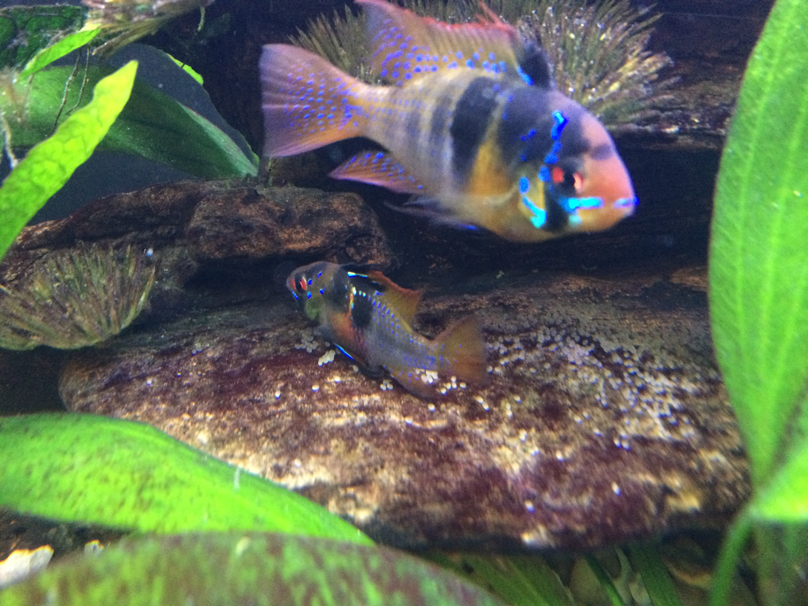

--- # Inflectional Morphology - Case ### Dr. Will Styler - LIGN 120 --- ### Today's Plan - Case Marking - A Case Study - Other case systems around the world --- ## Case Systems --- ## "Case System?" <img class="big" src="lotwimg/pelicancases.jpg"> --- ## "Case System?" <img class="big" src="lotwimg/uppercase.jpg"> --- Let's back up for a second. --- ### "Jony chased Dieter"  --- ## "How do we know who did what to whom?" --- ### Grammatical Relations How a language marks who did what to whom --- ### English uses word order to mark grammatical relations. * "Jony chased Dieter" * "Kevin waved to Niloo" * "Niloo waved to Kevin" * "Will ate his tofu wistfully" --- ### ... but that's not the only way! --- ### Some languages affix morphemes onto words to mark grammatical relations * We call these morphemes "case markers" * Nominative Case - "The Subject" * Accusative Case - "The Object" --- ### Grammatical Case Tacking morphemes onto words to indicate their role in the sentence - Grammatical case is found in 60% of languages in [WALS](https://wals.info) --- ### Russian Case Marking - sobaka vidye-la koshk-u - dog.NOM see-SG.FEM.PST cat-ACC.FEM - "The dog saw the cat." - koshka vidye-la sobak-u - cat.NOM see-SG.FEM.PST dog-ACC.FEM - "The cat saw the dog." --- ### Russian Case Marking - Ya tyebya vizh-u - I.NOM you.ACC see-1SG - "I see you" - Ti myenya vid-yesh - you.NOM I.ACC see-2SG - "You see me" --- <section data-background-color=#708cef></section> If we put the sentence "Niloo hugged the turtle" into Russian, the proper cases would be... A) Niloo - NOM, Turtle - ACC B) Niloo - ACC, Turtle - NOM C) Niloo - NOM, Turtle - NOM D) Niloo - ACC, Turtle - ACC --- <section data-background-color=#708cef></section> If we put the sentence "Niloo hugged the turtle" into Russian, the proper cases would be... <correct>A) Niloo - NOM, Turtle - ACC</correct> B) Niloo - ACC, Turtle - NOM C) Niloo - NOM, Turtle - NOM D) Niloo - ACC, Turtle - ACC --- ***Nominative and Accusative cases are really common!*** --- <lang>German</lang><br><ldata>IE:Germanic - Germany</ldata> * Der Hund beißt den Mann. * The-NOM dog bite-3sg the-ACC man. * 'The dog bites the man.' * Der Mann beißt den Hund. * The-NOM man bite-3sg the-ACC dog. * 'The man bites the dog.' --- <lang>English</lang><br><ldata>IE:Germanic - All over</ldata> <center> <style type="text/css"> .tg {border-collapse:collapse;border-spacing:0;} .tg td{font-family:Arial, sans-serif;font-size:24px;padding:10px 5px;border-style:solid;border-width:1px;overflow:hidden;word-break:normal;} .tg th{font-family:Arial, sans-serif;font-size:24px;font-weight:normal;padding:10px 5px;border-style:solid;border-width:1px;overflow:hidden;word-break:normal;} .tg .tg-e3zv{font-weight:bold} </style> <table class="tg"> <tr> <th class="tg-031e"></th> <th class="tg-e3zv">Singular Nominative</th> <th class="tg-e3zv">Plural Nominative</th> <th class="tg-e3zv">Singular Accusative</th> <th class="tg-e3zv">Plural Accusative</th> </tr> <tr> <td class="tg-e3zv">1st</td> <td class="tg-031e">I</td> <td class="tg-031e">we</td> <td class="tg-031e">me</td> <td class="tg-031e">us</td> </tr> <tr> <td class="tg-e3zv">2nd</td> <td class="tg-031e">you</td> <td class="tg-031e">y'all</td> <td class="tg-031e">you</td> <td class="tg-031e">y'all</td> </tr> <tr> <td class="tg-e3zv">3rd</td> <td class="tg-031e">he/she</td> <td class="tg-031e">they</td> <td class="tg-031e">him/her</td> <td class="tg-031e">them</td> </tr> </table> </center> --- <lang>English</lang><br><ldata>IE:Germanic - All over</ldata> * I see him * I-NOM see he-ACC * He sees me * He-NOM see-3sg I-NOM --- <lang>Geonosian</lang><br><ldata>??? - Geonosis</ldata> <img class="big" src="img/geonosian.jpg"> --- So, Nominative and Accusative cases are really useful! --- ### ... but Russian has more cases! --- ## The Russian Case System --- ## The Russian Case System * Nominative Case - "The Subject" * Accusative Case - "The Direct Object" * Dative Case - "The Indirect Object or Recipient" * Genitive Case - "The Possessor (and more)" * Locative Case - "The Location (and more)" * Instrumental Case - "The Tool (and more)" --- ### Dative Case Marks the indirect object, or recipient of an item --- ### Dative Case * Kevin dayot tsvet-i Lis-ye * Kevin-NOM give.3sg Flowers-ACC.PLUR Lisa-DAT * "Kevin gave Lisa flowers" * Enchilad-i mne da-la Niloo * Enchilada-ACC.PLUR 1sg.DAT give-PAST.FEM Niloo-NOM * "Niloo gave me Enchiladas" --- ### Dative as "Goal" * Ya pomoga-yu Kevinu * 1sg.NOM help-present.1sg Kevin-DAT * "I'm helping Kevin" * Mne zvoni-l Barack Obama * 1sg-DAT call-past.masc Barack Obama-NOM * "Barack Obama called me" --- <section data-background-color=#708cef></section> If we put the sentence "Jony gave Dieter some pellets" into Russian, the proper cases would be... A) Jony - ACC, Dieter - DAT, Pellets - NOM B) Jony - NOM, Dieter - DAT, Pellets - ACC C) Jony - NOM, Dieter - ACC, Pellets - DAT D) Jony - DAT, Dieter - ACC, Pellets - NOM --- <section data-background-color=#708cef></section> If we put the sentence "Jony gave Dieter some pellets" into Russian, the proper cases would be... A) Jony - ACC, Dieter - DAT, Pellets - NOM <correct>B) Jony - NOM, Dieter - DAT, Pellets - ACC</correct> C) Jony - NOM, Dieter - ACC, Pellets - DAT D) Jony - DAT, Dieter - ACC, Pellets - NOM --- ### Genitive Case Marks possession --- ### Genitive Case in Action * Ya vi-zhu sharik Pong-a * 1sg.NOM see-1sg ball-ACC Pongo-GEN * "I see Pongo's ball" * Michael Bay sam-aya bolsh-aya problem-a Amerik-ii * Michael Bay single-NOM large-NOM problem-NOM America-GEN * "Michael Bay is America's biggest problem" --- <section data-background-color=#708cef></section> If we put the sentence "Will stole the dragon's iPad" into Russian, the proper cases would be... A) Will - ACC, Dragon - NOM, iPad - GEN B) Will - NOM, Dragon - GEN, iPad - ACC C) Will - GEN, Dragon - ACC, iPad - NOM D) Will - NOM, Dragon - ACC, iPad - GEN --- ### Locative Case Marks the location of events * (this is also called the "Prepositional Case") --- ### Locative Case in action - Ya zhiv-u v Californi-i - 1sg.NOM live-1sg in California-LOC - "I live in California" --- ### Instrumental Case Marks an object being used --- ### Instrumental Case in Action * Andres pish-et karandash-om * Andres-NOM write-3sg pencil-INST * "Andres writes with a pencil" * Ya yem borscht so smetanoy * 1sg-NOM eat borscht-ACC with sour.cream-INST * "I eat borscht with sour cream" --- ### Russian used to have a Vocative case! - Calling out to somebody - Would differentiate 'Will' from 'will' - [Perhaps it's coming back](https://www.languagesoftheworld.info/morphology/case/vocative-case-russian.html) --- ## The Russian Case System * Nominative Case - "The Subject" * Accusative Case - "The Direct Object" * Dative Case - "The Indirect Object or Recipient" * Genitive Case - "The Possessor (and more)" * Locative Case - "The Location (and more)" * Instrumental Case - "The Tool (and more)" - *It's actually **way** more complicated than this!* --- ### So, now you know the Russian system - Just in case. --- ## Other Case Systems --- ### Languages have different case systems - Common cases to mark the subject of an intransitive or agent of transitive sentence (Nominative), the direct object (Accusative), the indirect object (Dative). - ... but it doesn't always work that way! - There are lots of other cases out there - Often, they code things that prepositions are used for in other languages - But we're not Finnished yet --- ### Finnish Cases - NOM, ACC, GEN - Partitive: Marks a part, not the whole - Inessive: Marks being inside the noun - Elative: Marks coming out from the noun - Illative: Marks going into the noun - Adessive: Marks being near or close to the noun - Ablative: Marks moving from off of the noun - Allative: Marks moving onto the noun --- ### Finnish Cases (Continued) - Essive: Marks a temporary state of being ("as a grad student" or "on Thursday") - Translative: Marks a change of state - Instructive: Roughly instrumental, but more generic manner - Abessive: Marks something that's lacked. - Comitative: Marks being with something --- ### Cases mean different things in every language! - Just because the grammar says 'Dative', it doesn't mean it's the same as Russian or German - You'll need to learn these details for every language you encounter - You never know what kind of cases you'll deal with - *Don't make a deadly assumption!* --- ### Wrapping Up - Case is a very important grammatical feature - Don't assume it works the same in all languages - It's magical --- ## For Next Time - Some more data, then we'll start verbal inflection! - HW1 is online --- <huge>Thank you!</huge>